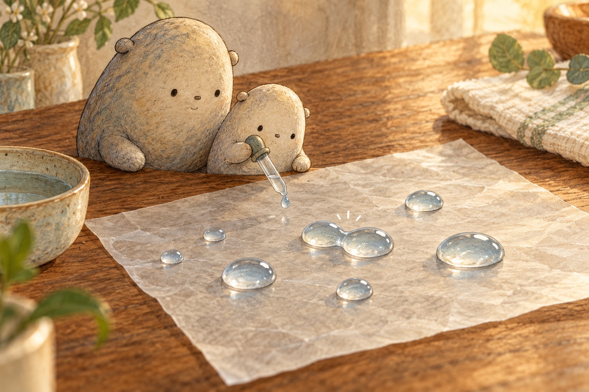
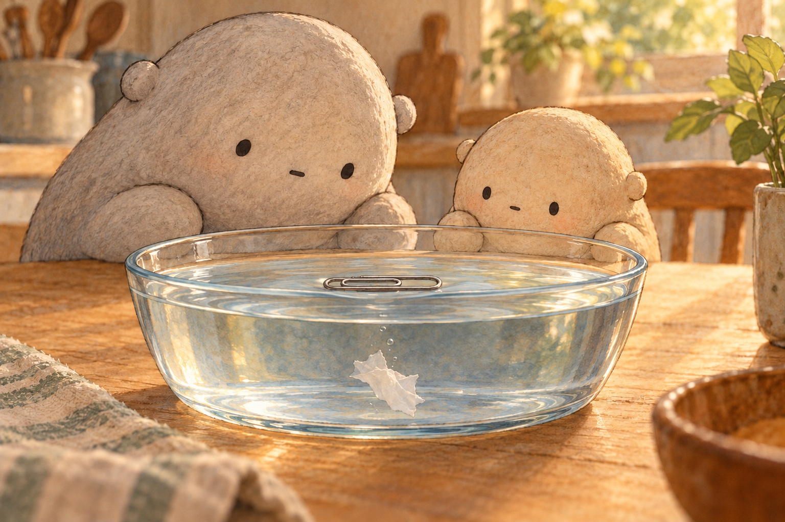
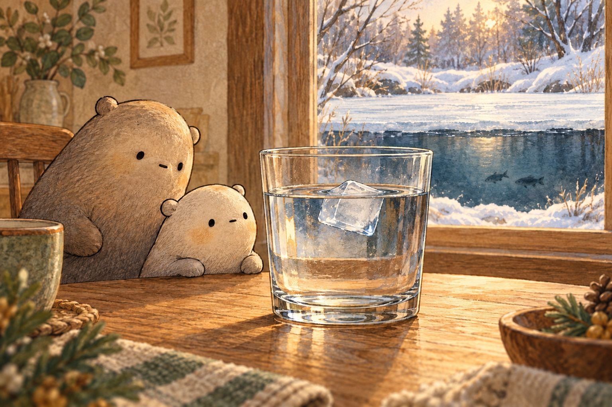
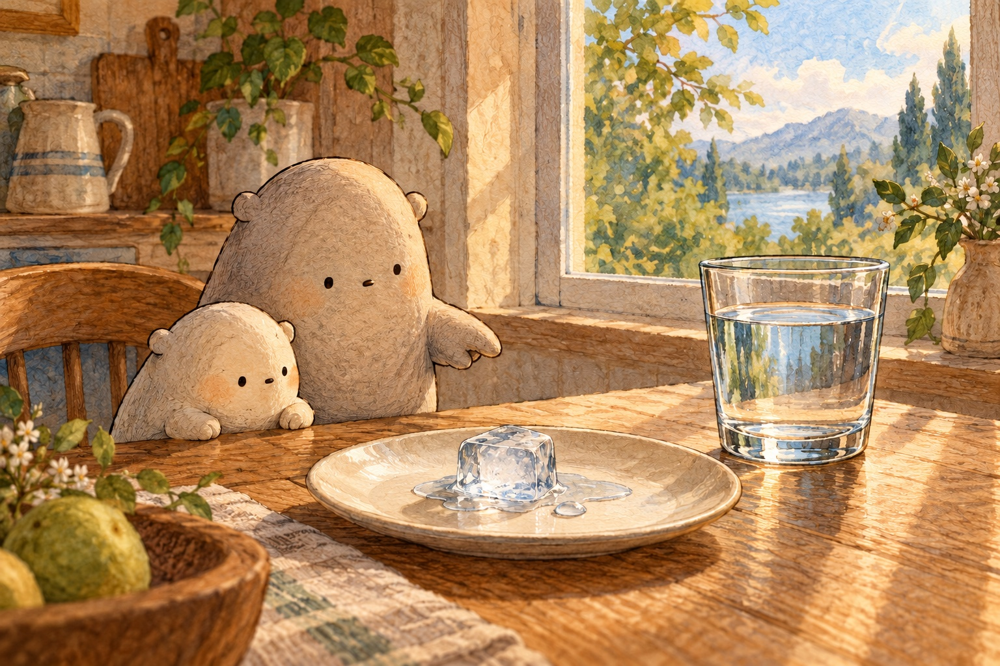
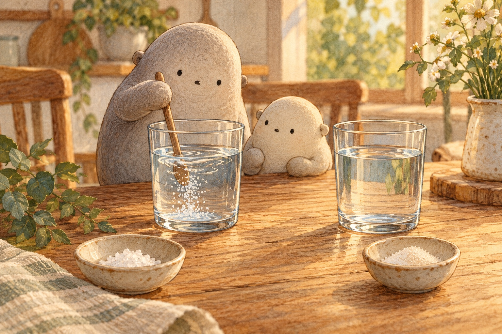

How can one tiny kind of molecule make drops bead, ice float, and so many things dissolve?
Where shall we look?
Two hydrogen atoms and one oxygen atom join to make one water molecule.
What does H2O mean?
Find the small three-part model beside the glass: two matching pieces and one larger piece.
A little explanation & something to try
Water is made of tiny pieces called molecules. Each water molecule is H2O: two hydrogen atoms joined to one oxygen atom. Atoms are even smaller pieces that can join to make molecules.
Try this. Put one ice cube on a plate and start a timer. Use only cool water, keep a towel nearby, and wipe up every spill. Watch until the ice melts.

The attraction between water molecules helps drops gather into rounded beads.
Why do water drops bead up?
Look at the rounded drops on wax paper and the larger drop where two small ones have joined.
A little explanation & something to try
Water molecules attract one another. At the surface, their pull creates surface tension, which helps a drop gather into a rounded bead instead of spreading flat.
Try this. Use a dropper or the end of a straw to place a few water drops on wax paper. Nudge two drops together and watch them join.

Surface tension lets gently placed paperclips rest on the top of water.
How can a paperclip rest on water?
See how the paperclip rests across the surface while the water bends slightly beneath it.
A little explanation & something to try
Surface tension makes the top of the water resist being pulled apart. It can act a little like a skin, but it is not a real solid skin. A paperclip can rest there if it is placed gently.
Try this. Lay a small piece of tissue on water, place a clean paperclip on the tissue, and wait for the tissue to sink while the paperclip stays.

Ice is lighter for its size than liquid water, so it floats.
Why does ice float?
Compare the ice cube above the waterline with the liquid below it and the winter pond beyond the window.
A little explanation & something to try
When water freezes, its molecules settle into a roomier pattern. Ice is lighter for its size than liquid water, so it floats. That unusual clue helps ponds freeze from the top while liquid water remains below.
Try this. Drop an ice cube into a clear cup of water. Look from the side and notice how part of the cube stays above the surface.
Water groups and arrays
Use repeated addition to count equal groups and rows.
The attraction between water molecules helps drops gather into rounded beads.
Draw your own water-drop array with 2 to 5 rows and 2 to 5 drops in each row.
1. Big fills 2 ice trays with 4 ice cubes in each tray. How many ice cubes are there altogether?
4 + 4 =
A small hint
Add the equal groups: 4 + 4.
2. Little makes 3 rows of 3 water drops on wax paper. How many drops are in the array?
3 + 3 + 3 =
A small hint
Add one row at a time: 3 + 3 + 3.
3. There are 5 cups with 2 paper straws beside each cup. How many paper straws are there altogether?
2 + 2 + 2 + 2 + 2 =
A small hint
Add the 5 equal groups: 2 + 2 + 2 + 2 + 2.
4. Big arranges 3 rows of 5 paperclips for a water test. How many paperclips are in the array?
5 + 5 + 5 =
A small hint
Add the rows: 5 + 5 + 5.
5. Little sets 4 trays with 4 small bowls of water on each tray. How many bowls are there altogether?
4 + 4 + 4 + 4 =
A small hint
Add the 4 equal groups: 4 + 4 + 4 + 4.
6. Big arranges 5 rows of 4 cups of water. How many cups are in the array?
4 + 4 + 4 + 4 + 4 =
A small hint
Add one row at a time: 4 + 4 + 4 + 4 + 4.
Six clues hidden in water
H2O: Why Water Is Special
Three atoms together
Little held a clear glass to the light. Tiny molecules moved inside. Every water molecule has the same recipe: two hydrogen atoms joined to one oxygen atom. H2O records that recipe.
What does the 2 in H2O tell us about one water molecule?

The same water, three ways
An ice cube softened into a puddle. Solid ice had melted into liquid water. Water can also become a gas called water vapor. These changes rearrange the molecules, but they remain water molecules.
What changes when ice melts, and what stays the same?
Drops that gather
Little placed drops on wax paper. Each curved into a bead instead of spreading flat. Water molecules attract one another, pulling the surface together. Two nearby beads joined into one larger drop.
What evidence shows that water molecules pull toward one another?
A surface that holds
Big lowered a paperclip on a small raft of tissue. The tissue sank, but the clip stayed at the top. The water was not covered by a solid skin. Its surface tension came from water molecules pulling together, making the surface resist being broken.
Why is water's “skin” only a comparison, not a real skin?
Roomier ice
In liquid water, molecules slide close together. When water freezes, the molecules lock into a roomier pattern. That makes ice lighter for its size than liquid water, so it floats. On a pond, floating ice forms first at the top while liquid water—and fish—can remain below.
How does the roomier pattern in ice help pond life?

Water makes room
A spoonful of sugar seemed to disappear in water, but its tiny pieces had not vanished. Water molecules surrounded those pieces and carried them through the glass. Water can dissolve many substances, including sugar and salt, though it cannot dissolve everything. One small molecule had many remarkable ways to act.